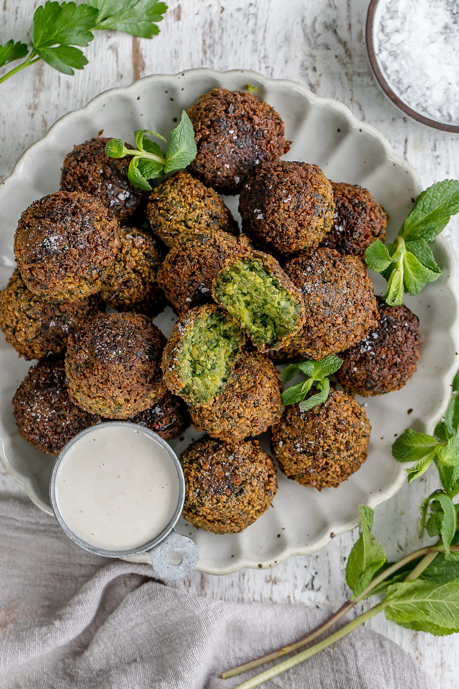

Falafel

Description
Falafel is a popular Middle Eastern dish made from ground chickpeas or fava beans, mixed with herbs,
spices, and onion, then formed into balls or patties and deep-fried until golden and crispy. It's
often served in pita bread or as part of a mezze platter with tahini sauce, salad, and pickles.
Falafel is not only delicious but also vegetarian and gluten-free, making it a versatile and
satisfying option for everyone.
Ingredients
- 1 cup dried chickpeas or fava beans
- 1 small onion, chopped
- 3 cloves garlic, minced
- 1/4 cup chopped fresh parsley
- 1/4 cup chopped fresh cilantro
- 1 teaspoon ground cumin
- 1 teaspoon ground coriander
- 1/4 teaspoon cayenne pepper (optional)
- 1 teaspoon baking powder
- Salt and black pepper to taste
- Vegetable oil for frying
Steps
- Soak the dried chickpeas or fava beans in water overnight or for at least 6 hours.
- Drain and rinse the soaked chickpeas or fava beans, then transfer them to a food processor.
- Add the chopped onion, minced garlic, fresh parsley, fresh cilantro, ground cumin, ground coriander,
cayenne pepper (if using), baking powder, salt, and black pepper to the food processor.
- Pulse the mixture until it forms a coarse paste, being careful not to over-process.
- Transfer the falafel mixture to a bowl, cover, and refrigerate for at least 1 hour to firm up.
- Heat vegetable oil in a deep fryer or large skillet to 350°F (175°C).
- Form the falafel mixture into small balls or patties using wet hands, then carefully drop them into the hot oil.
- Fry the falafel in batches for 3-4 minutes, or until golden brown and crispy on the outside.
- Remove the falafel from the oil using a slotted spoon and drain on paper towels.
- Serve the falafel hot with tahini sauce, pita bread, salad, and pickles.